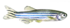
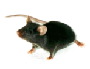
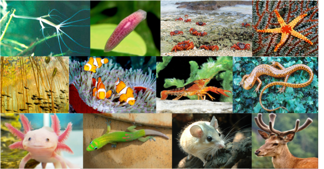
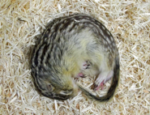

HUANG LAB AT UCSF


The regenerative potential in the animal kingdom displays striking divergence across ontogeny and phylogeny. For example, heart regeneration is remarkably robust in adult zebrafish and newborn mice while very limited in adult mammals. This presents a particular problem for patients with a heart attack who suffer from loss of millions of heart muscle cells and life-threatening functional deterioration of the heart.
We use the heart as a model system and an entry point to study organ regeneration and repair in adult zebrafish, neonatal and adult mice, with an emphasis on the pathways that regulate resident stem cell activation and mature cell dedifferentiation/proliferation, and with innovative and integrated approaches in genome manipulation technology, tissue and molecular engineering, single cell analysis, and advanced imaging microscopy.
On-going Research includes
-
1.Developing novel intravital imaging and tissue clearing techniques to visualize cellular dynamics during heart development, regeneration and injury repair.
-
2.Performing unprecedented functional screens to induce adult mouse cardiomyocyte regeneration using both candidate gene and directed evolution approaches integrated with CRISPR/Cas9 genome manipulation technology.
-
3.Conducting single cell analyses and lineage tracing studies of resident progenitor cells and differentiated cells in the heart during development, regeneration and diseases.
-
4.Taking pharmacological and genetic approaches to uncover the unifying principle underlying the decline of regenerative potentials in adult mammalian organs and appendages including the heart, digit/limb, skin, brain, and spinal cord.
-
5.Leveraging the power of phylogenetic screen to identify novel higher vertebrate animal models with extraordinary tissue regenerative capacity.
-
6.Investigating human genetic mutations and underlying molecular mechanisms in rare heart diseases that may result in preservation of cardiac regenerative potential.
-
7.Exploring the molecular basis of extreme biology in invertebrate and vertebrate species including water bears, worms, fruit flies, naked mole-rats, African spiny mice, ground squirrels, whales, armadillos, tenrecs and bats.
Our recent findings of organ regeneration in development and evolution yield unprecedented insights into the link of regeneration to cancer, metabolism, and aging, and suggest the existence of non-model organisms and rare human individuals with extreme physiology and capability that await exciting biology discovery.


CURRENT AND PAST SUPPORTS


